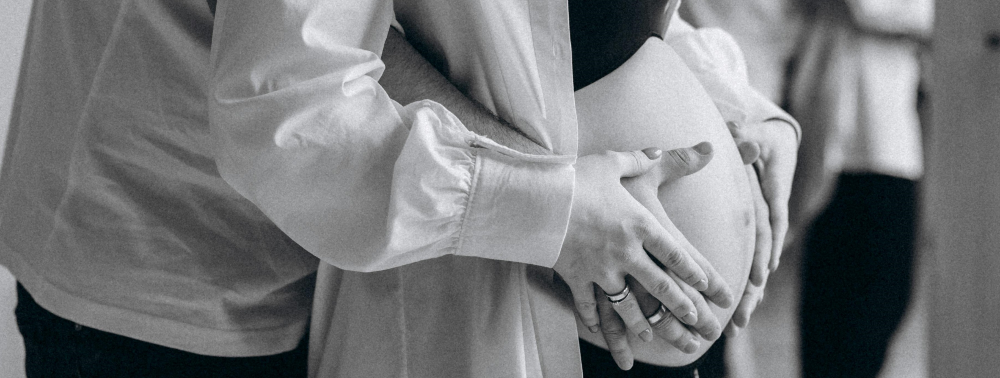

Aceitar o diagnóstico de autismo ou Síndrome de Down de um filho pode ser difícil. O processo para obter esse resultado geralmente é longo. Mesmo assim, a família nem sempre está preparada para ouvir essa notícia. Por isso, é comum que os pais passem por uma fase de negação, precisando de tempo para se adaptar e, aceitar o diagnóstico.

O Processo
De
Aceitação
Fases da Aceitação
Algumas famílias conseguem receber o diagnóstico de uma deficiência de forma realista, enquanto outras tendem a negar essa realidade. De acordo com estudos, os pais passam por diferentes fases após o diagnóstico de uma deficiência no filho.
Negação
A primeira fase geralmente é a negação, quando a família não está pronta para aceitar a situação. Nesse momento, muitos pais não acreditam no diagnóstico e podem procurar uma segunda opinião que esteja mais alinhada às suas expectativas. Em alguns casos, essa busca pode se prolongar enquanto os pais tentam encontrar uma "cura", como apontam alguns especialistas. Essa fase de negação pode durar dias, meses ou até anos. Cada família tem seu próprio tempo para processar seus sentimentos e entender a situação. No entanto, a maioria dos pais precisa de bastante tempo para aceitar a realidade e começar a se conectar com a criança.
Adaptação
Depois da fase de negação, a família entra em um processo de adaptação. Nesse momento, os pais procuram mais informações, não para contestar o diagnóstico, mas para entender melhor a condição e como lidar com ela. O apoio de profissionais é essencial nessa fase, pois eles fornecem informações e suporte para ajudar os pais a compreenderem as necessidades do filho, vendo-o como um ser humano completo e valioso.
Aceitação
A última etapa é a aceitação. Para que isso aconteça, os pais precisam ter uma visão clara e realista da criança e de sua condição. É importante que eles reconheçam que, antes de tudo, a criança com deficiência é uma criança como qualquer outra, com necessidades, problemas e questões do dia a dia. Esse é um ponto fundamental que deve ser transmitido aos pais para ajudá-los a aceitar plenamente a condição do filho.
Como aceitar
Aceitar o diagnóstico de autismo ou Síndrome de Down exige repensar os sonhos e planos que os pais tinham. Isso significa deixar de lado expectativas antigas e aprender a valorizar e celebrar as conquistas únicas de seus filhos. Em vez de focar no que poderia ter sido, os pais devem apoiar o desenvolvimento dos filhos dentro de suas capacidades individuais.
A terapia tem um papel importante nesse processo. Com o apoio de profissionais, os pais encontram um espaço seguro para compartilhar suas experiências, expressar seus sentimentos e entender melhor suas emoções. Isso ajuda a lidar de maneira saudável com o estresse e a ansiedade.
Além disso, a terapia ajuda os pais a aceitarem o diagnóstico, entendendo melhor as características do autismo ou da Síndrome de Down. Ela também oferece orientações práticas, como estratégias de apoio, formas eficazes de comunicação e outras habilidades para ajudar no dia a dia.

Ajuda médica
Os estudos analisados mostram que o diagnóstico de uma deficiência pode gerar várias emoções e reações nos pais, como dúvida, choque, frustração, culpa, tristeza, medo, insegurança, rejeição, revolta, negação, vergonha, isolamento, superproteção, entre outras.
Essas emoções podem variar em intensidade, assim como a capacidade dos pais de lidar com elas, o que pode dificultar o entendimento das informações passadas pela equipe médica durante o diagnóstico. Situações inesperadas ou desconhecidas tornam essa assimilação ainda mais difícil. Muitas vezes, a família tem dificuldade em expressar o que está sentindo, e o apoio de um psicólogo pode ser muito útil para ajudar a identificar e compreender os conflitos e sentimentos através de uma escuta acolhedora e apoio emocional.